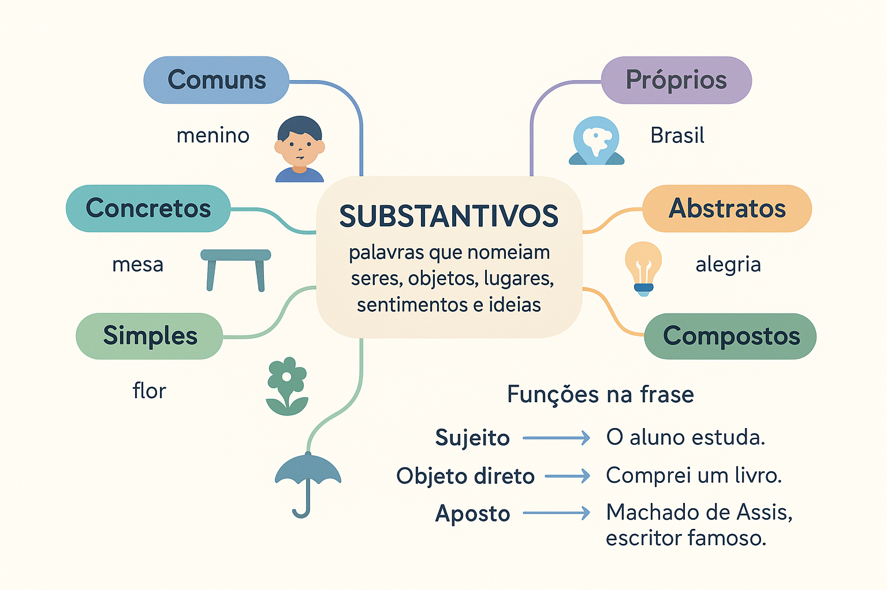

Substantivos: o que são, tipos, flexões e funções na frase
Os substantivos são palavras que nomeiam seres, objetos, lugares, sentimentos, estados, ações e ideias. Palavras como estudante, cidade, alegria, viagem e liberdade pertencem a essa classe.
Para compreender os substantivos, é importante observar três aspectos: o que nomeiam, como se organizam e variam e como participam da estrutura das frases.
Neste conteúdo, você encontrará classificações, exemplos comentados, diferenças entre classe gramatical e função sintática, erros comuns e um quiz para revisar.

O que é um substantivo?
O substantivo é uma classe de palavras com função de nomeação. Além de pessoas e objetos, pode nomear fenômenos, acontecimentos, qualidades, sentimentos e conceitos.
- Pessoa: professora, estudante, Ana;
- Animal: cachorro, onça, borboleta;
- Objeto: livro, mesa, computador;
- Lugar: escola, Maranhão, Brasil;
- Sentimento: alegria, saudade, medo;
- Estado: cansaço, tranquilidade;
- Ação: construção, leitura, viagem;
- Qualidade: beleza, honestidade;
- Conceito: justiça, cidadania.
Na estrutura da frase, o substantivo costuma ser o núcleo de um grupo nominal, isto é, o elemento central em torno do qual outros termos podem se organizar.
“Os dois estudantes atentos chegaram.”
O grupo “os dois estudantes atentos” tem como núcleo o substantivo estudantes. Artigo, numeral e adjetivo se relacionam com esse núcleo.
Classificação dos substantivos
Os substantivos são classificados por critérios diferentes. Por isso, uma mesma palavra pode receber várias classificações ao mesmo tempo.
1. Substantivo comum e substantivo próprio
O substantivo comum nomeia elementos de uma classe sem apresentar, por si só, um nome individualizador. Já o substantivo próprio individualiza um referente por meio de uma denominação.
- Comuns: cidade, professora, rio, país;
- Próprios: Lago da Pedra, Ana, Tocantins, Brasil.
“A cidade de Lago da Pedra fica no Maranhão.”
“Cidade” é substantivo comum; “Lago da Pedra” é um nome próprio.
Os nomes próprios são escritos com inicial maiúscula. Entretanto, uma palavra não se torna própria apenas porque aparece com maiúscula no começo de uma frase.
2. Substantivo concreto e substantivo abstrato
Na classificação tradicional, o substantivo concreto designa seres concebidos como entidades, sejam reais ou imaginários: casa, árvore, fada e dragão.
O substantivo abstrato nomeia ações, estados, qualidades e sentimentos considerados em abstração: construção, cansaço, beleza e saudade.
Concreto não significa apenas “aquilo que pode ser tocado”
Esse teste é insuficiente. Um dragão pode ser imaginário e, ainda assim, ser nomeado por um substantivo concreto na classificação tradicional.
O sentido da palavra pode alterar a classificação
Ação
“A construção da escola demorou dois anos.”
“Construção” nomeia o processo de construir: leitura abstrata.
Edificação
“Aquela construção tem três andares.”
“Construção” nomeia o edifício: leitura concreta.
3. Substantivo simples e substantivo composto
O substantivo simples apresenta um radical; o composto resulta da combinação de dois ou mais radicais.
- Simples: flor, pedra, livro, livraria;
- Compostos: beija-flor, guarda-chuva, passatempo.
Hífen não é o critério decisivo. “Passatempo” é composto mesmo sendo escrito sem hífen. “Livraria” é simples, embora contenha um sufixo.
4. Substantivo primitivo e substantivo derivado
O substantivo primitivo não é formado a partir de outra palavra do português na análise considerada. O derivado é formado a partir de uma base por um processo de derivação.
- Pedra → pedreiro;
- Livro → livraria;
- Flor → florista.
O fato de uma palavra ser derivada não garante que seja substantivo. Em “manejo florestal”, por exemplo, florestal é adjetivo, pois caracteriza o substantivo “manejo”.
5. Substantivo coletivo
O substantivo coletivo, no singular, designa um conjunto de seres ou elementos considerados como uma unidade.
| Coletivo | Conjunto designado |
|---|---|
| Cardume | Peixes. |
| Alcateia | Lobos. |
| Arquipélago | Ilhas. |
| Enxame | Abelhas, entre outros insetos. |
| Constelação | Estrelas, na classificação escolar tradicional. |
| Elenco | Atores de uma produção. |
O coletivo pode ir para o plural: dois cardumes indica dois conjuntos de peixes. Na construção “o cardume passou”, a concordância se faz normalmente no singular com o núcleo “cardume”.
Uma palavra pode receber várias classificações?
Sim. As classificações não formam uma lista de opções mutuamente exclusivas, porque consideram aspectos diferentes.
Livraria:
- Comum: nomeia uma classe de estabelecimentos;
- Concreto: nomeia um estabelecimento;
- Simples: apresenta um radical;
- Derivado: é formado a partir de “livro”.
Não confunda: simples não significa primitivo. Uma palavra pode ser simples e derivada ao mesmo tempo.
Gênero dos substantivos
Os substantivos apresentam gênero gramatical masculino ou feminino. Essa classificação orienta a concordância com artigos, adjetivos e outras palavras.
- O livro novo;
- A revista nova.
Gênero gramatical não equivale necessariamente ao sexo do referente. “Mesa” é feminino e “livro” é masculino, embora nomeiem objetos.
Substantivos biformes
Apresentam formas diferentes para masculino e feminino: menino/menina, professor/professora e ator/atriz.
Substantivos uniformes
Apresentam uma mesma forma e podem ser divididos, na classificação escolar, em três grupos.
| Tipo | Característica | Exemplo |
|---|---|---|
| Comum de dois gêneros | A mesma forma admite determinantes de gêneros diferentes. | O estudante / a estudante. |
| Sobrecomum | Possui um gênero gramatical fixo ao se referir a pessoas. | A criança; a vítima; o indivíduo. |
| Epiceno | Nomeia animal com um gênero gramatical fixo; a distinção pode ser indicada por “macho” e “fêmea”. | A cobra macho / a cobra fêmea. |
Em “a criança estava cansada”, a concordância acompanha o gênero gramatical de “criança”, independentemente de quem seja o referente.
A terminação determina o gênero?
Não. Embora existam padrões frequentes, há palavras como o problema, o mapa, a mão e a foto. A vogal final não basta para identificar o gênero.
Número: singular e plural
A oposição de número envolve singular e plural. A formação do plural apresenta diferentes padrões.
| Padrão frequente | Exemplos |
|---|---|
| Acréscimo de “s” em muitas palavras terminadas em vogal. | Livro → livros; casa → casas. |
| Troca do “m” final por “ns”. | Homem → homens; jardim → jardins. |
| Acréscimo de “es” em muitas palavras terminadas em “r” e “z”. | Flor → flores; luz → luzes. |
| Alteração de muitas terminações em “al”, “el” e “ol”. | Animal → animais; papel → papéis; farol → faróis. |
| Diferentes plurais para palavras terminadas em “ão”. | Coração → corações; pão → pães; mão → mãos. |
| Forma invariável em certos casos. | O lápis → os lápis; o ônibus → os ônibus. |
Os padrões não dispensam atenção às particularidades de cada palavra. “Mal”, por exemplo, tem plural “males”, e não segue a alteração observada em “animal/animais”.
Plural dos substantivos compostos
O plural dos compostos depende da estrutura da palavra. Não há uma única regra aplicável a todos os casos.
- Guarda-chuva → guarda-chuvas;
- Beija-flor → beija-flores;
- Couve-flor → couves-flores;
- Passatempo → passatempos.
Grau: aumentativo e diminutivo
Na apresentação escolar tradicional, o grau é estudado com as variações do substantivo. Pode ser expresso por palavras acompanhantes ou por sufixos.
- Forma analítica: casa grande, casa pequena.
- Forma sintética: casarão, casinha.
Em descrições morfológicas, a formação por sufixos de grau também pode ser analisada como derivação. É importante observar a abordagem adotada no material ou na questão.
O grau pode expressar avaliação
Diminutivos e aumentativos não indicam apenas tamanho. Podem expressar afeto, desprezo, ironia, intensidade ou avaliação.
- “Meu filhinho chegou.” — pode expressar carinho.
- “Que livrão!” — pode elogiar a qualidade de uma obra.
- “Ele apresentou um projetinho...” — pode sugerir desvalorização, conforme o contexto.
Substantivação: quando outra palavra assume função substantiva
A substantivação ocorre quando uma palavra ou expressão passa a ocupar uma posição substantiva em determinado contexto.
Adjetivo
“O estudante jovem apresentou o trabalho.”
“Jovem” caracteriza o substantivo “estudante”.
Emprego substantivo
“O jovem apresentou o trabalho.”
“Jovem” nomeia a pessoa e é núcleo do grupo nominal.
“O estudar exige disciplina.”
O infinitivo “estudar” ocupa uma posição substantiva e é núcleo do sujeito.
A presença de artigo pode ser uma pista, mas a análise precisa considerar a estrutura. Em “o novo livro”, o artigo se relaciona ao grupo cujo núcleo é “livro”; ele não transforma automaticamente “novo” em substantivo.
Classe gramatical e função sintática
Substantivo é uma classe de palavras. Sujeito, objeto direto, predicativo e outras categorias indicam funções desempenhadas pelos termos na oração.
Um substantivo pode ser núcleo de termos com diferentes funções. É importante distinguir o núcleo do grupo completo.
“A criança leu o livro novo.”
- Objeto direto: “o livro novo”;
- Núcleo do objeto direto: “livro”;
- Classe de “livro”: substantivo.
Funções de termos que contêm substantivos
| Função | Exemplo | Análise |
|---|---|---|
| Sujeito | O estudante chegou. | O termo é sujeito; “estudante” é seu núcleo. |
| Objeto direto | A criança leu o livro. | O termo complementa “leu”; “livro” é seu núcleo. |
| Objeto indireto | Ela gosta de música. | O termo complementa “gosta”; “música” é seu núcleo. |
| Complemento nominal | A confiança na equipe aumentou. | O termo completa “confiança”; “equipe” é seu núcleo. |
| Adjunto adnominal | O caderno de Ana sumiu. | O termo especifica a posse; “Ana” é um substantivo próprio. |
| Predicativo do sujeito | Ela é professora. | O substantivo participa da identificação do sujeito. |
| Aposto explicativo | Ana, professora da turma, chegou. | O termo explica “Ana”; “professora” é seu núcleo. |
| Vocativo | Maria, venha aqui. | O nome identifica a pessoa chamada. |
| Adjunto adverbial | A reunião ocorrerá na escola. | O termo indica lugar; “escola” é seu núcleo substantivo. |
O sujeito não é sempre quem pratica uma ação
Em “A estudante está cansada”, o sujeito participa de uma atribuição de estado. Em “O livro foi encontrado”, o sujeito não é o agente da ação.
A identificação do sujeito deve considerar a estrutura da oração e a concordância, não apenas a ideia de “quem faz alguma coisa”.
Análise comentada: “Sentimos saudade dos avós”
Essa frase permite perceber como diferentes termos se organizam em torno de um substantivo abstrato.
- Sujeito desinencial: nós;
- Verbo: sentimos;
- Objeto direto: saudade dos avós;
- Núcleo do objeto direto: saudade;
- Complemento nominal de “saudade”: dos avós, que indica de quem se sente falta.
Portanto, “saudade” não é objeto indireto nessa construção. O grupo “saudade dos avós” complementa diretamente o verbo “sentimos”, enquanto “dos avós” se liga ao substantivo “saudade”.
Como identificar substantivos na prática
- Observe o sentido: a palavra nomeia uma pessoa, um objeto, uma ação, uma qualidade ou outro referente?
- Examine o grupo: verifique qual palavra funciona como núcleo e quais a acompanham.
- Considere os determinantes: artigos, demonstrativos e possessivos podem ajudar, sem funcionar como um teste isolado.
- Compare os contextos: a mesma forma pode assumir empregos diferentes.
- Separe as análises: primeiro identifique a classe; depois, a função do termo na oração.
Erros comuns no estudo dos substantivos
| Confusão | Explicação adequada |
|---|---|
| “Todo substantivo concreto pode ser tocado.” | Seres imaginários também podem receber nomes concretos. |
| “Toda palavra derivada é substantivo.” | A derivação pode formar palavras de diferentes classes. |
| “Simples é o mesmo que primitivo.” | “Livraria” é simples e derivado. |
| “Todo substantivo é sujeito.” | Classe gramatical e função sintática são categorias distintas. |
| “Coletivo não tem plural.” | “Cardumes” pode indicar vários conjuntos de peixes. |
| “Diminutivo indica somente tamanho.” | Também pode expressar afeto, ironia ou desprezo. |
| “Composto precisa ter hífen.” | “Passatempo” é composto e não apresenta hífen. |
Substantivos na interpretação e na produção textual
A escolha de substantivos pode expressar uma avaliação. Chamar o mesmo acontecimento de “mudança”, “avanço” ou “retrocesso” orienta o leitor de maneiras diferentes.
Nominalização
A nominalização permite apresentar uma ação ou um processo por meio de um nome.
Construção com verbo
“A equipe revisou o projeto.”
Construção nominalizada
“A revisão do projeto pela equipe foi concluída.”
A nominalização pode ajudar a retomar informações e organizar a progressão do texto. Seu uso excessivo, porém, pode tornar a escrita mais densa.
O que observar em provas
Questões podem solicitar a classificação de um nome, a interpretação de um diminutivo, a distinção entre substantivo e adjetivo ou a análise da função de um grupo nominal.
Leia o comando com atenção: perguntar pela classe de uma palavra não é o mesmo que perguntar por sua função sintática.
Resumo sobre substantivos
- Substantivos nomeiam seres, objetos, ações, estados e conceitos.
- Podem ser comuns ou próprios, concretos ou abstratos.
- Quanto à estrutura, podem ser simples ou compostos.
- Quanto à formação, podem ser primitivos ou derivados.
- Coletivos designam conjuntos e também podem ter plural.
- Gênero gramatical não equivale necessariamente ao sexo do referente.
- Aumentativos e diminutivos podem expressar avaliação.
- Substantivos podem ser núcleos de termos com diferentes funções.
- A classificação deve considerar o emprego da palavra no contexto.
Quiz sobre substantivos
Selecione uma alternativa por questão e clique em “Verificar respostas”.
Questão 1 — Classificações simultâneas
Em “A livraria abriu cedo”, o substantivo “livraria” pode ser classificado como:
Questão 2 — Concreto e abstrato
Qual alternativa contém um substantivo abstrato?
Questão 3 — Gênero
A oposição “o estudante / a estudante” exemplifica um substantivo:
Questão 4 — Classe e função
Em “A criança leu o livro novo”, a análise adequada é:
Questão 5 — Efeito de sentido do grau
Ao abraçar o filho adulto, uma mãe diz “Meu filhinho chegou!”. Nesse contexto, o diminutivo expressa principalmente:
Questão 6 — Análise dos complementos
Em “Sentimos saudade dos avós”, qual análise está correta?
Conclusão
O estudo dos substantivos envolve nomeação, estrutura, formação e participação na frase. Dominar esses aspectos exige considerar o contexto e distinguir os critérios de classificação.
Ao analisar um exemplo, identifique a palavra, observe o grupo de que ela participa e explique sua função. Esse procedimento ajuda tanto na resolução de questões quanto na leitura e na revisão de textos.
Perguntas frequentes sobre substantivos
O que é substantivo?
Substantivo é uma classe de palavras que nomeia seres, objetos, lugares, sentimentos, estados, ações e ideias. Na frase, costuma funcionar como núcleo de grupos nominais.
Um substantivo pode receber várias classificações?
Sim. As classificações consideram critérios diferentes. “Livraria”, por exemplo, pode ser classificado como comum, concreto, simples e derivado.
Todo substantivo concreto pode ser tocado?
Não. Na classificação tradicional, substantivos concretos também podem nomear seres imaginários, como fada e dragão. A possibilidade de tocar não é um critério suficiente.
Todo substantivo é sujeito?
Não. Substantivo é uma classe de palavras, enquanto sujeito é uma função sintática. Um substantivo pode ser núcleo de termos com diferentes funções.
Substantivos coletivos podem ir para o plural?
Sim. Um coletivo no singular já designa um conjunto. Seu plural pode indicar vários conjuntos, como em “dois cardumes” ou “três arquipélagos”.
O que é substantivação?
É o emprego de uma palavra ou expressão em função substantiva. Em “O estudar exige disciplina”, o infinitivo “estudar” ocupa uma posição substantiva.
Continue estudando Língua Portuguesa
Referências para aprofundamento
- BECHARA, Evanildo. Moderna gramática portuguesa. Consulte os capítulos sobre classes de palavras, substantivos e estrutura da oração.
- CUNHA, Celso; CINTRA, Lindley. Nova gramática do português contemporâneo. Consulte as seções sobre substantivos, formação de palavras e sintaxe.
Explore outros conteúdos
Continue seus estudos acessando outras seções do site Mestre Kira: